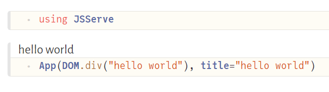

Deployment
Apps can be deployed in a wide variety of scenarios.
Lets start with a very simple example app and show how to deploy that App:
using Bonito
example_app = App(DOM.div("hello world"), title="hello world")Server
# Depending on your servers setup, you may need to listen on another port or URL
# But 0.0.0.0:80 is pretty standard for most server setups
port = 80
url = "0.0.0.0"
server = Bonito.Server(example_app, url, port)Now, you should see the webpage at http://0.0.0.0:80.
Proxy + Julia Hub
If the server is behind a proxy, you can set the proxy like this:
server = Bonito.Server(example_app, "0.0.0.0", 8080; proxy_url="https://my-domain.de/my-app");
# or set it later
# this can be handy for interactive use cases where one isn't sure which port is open, and let Bonito find a free port (which will then be different from the one created with, but is stored in `server.port`)
server.proxy_url = ".../$(server.port)"".../8080"Bonito tries to do this for known environments like JuliaHub via get_server(). This will find the most common proxy setup and return a started server:
server = Bonito.get_server()
# add a route to the server for root to point to our example app
route!(server, "/" => example_app)The url which this site is now served on can be found via:
# Here in documenter, this will just return a localhost url
url_to_visit = online_url(server, "/")"http://localhost:9384/"Like this, one can also add multiple pages:
page_404 = App() do session, request
return DOM.div("no page for $(request.target)")
end
# You can use string (paths), or a regex
route!(server, r".*" => page_404)
route!(server, "/my/nested/page" => App(DOM.div("nested")))
url_to_visit = online_url(server, "/my/nested/page")"http://localhost:9384/my/nested/page"Secure HTTPS connections with SSL
If the boss insists your fancy webpage use the https:// protocol, ask them for the SSL certificate and key files, and then launch your Bonito App like this:
using MbedTLS
sslconfig = MbedTLS.SSLConfig(<path-to-SSL-certificate-file>, <path-to-SSL-key-file>)
Bonito.Server(main, url, port, sslconfig=sslconfig)Logging requests
You want to see who accesses all of your hard work? No problem!
using HTTP
access_log = HTTP.logfmt"[$time_iso8601] $remote_addr $request_uri"
Bonito.Server(main, url, port, access_log=access_log)nginx
If you need to re-route Bonito e.g. to host in parallel to PlutoSliderServer, you want a reverse-proxy like nginx. We did some testing with nginx and the following configuration worked for us:
server {
listen 8080;
location /bonito/ {
proxy_pass http://localhost:8081/;
proxy_http_version 1.1;
proxy_set_header Upgrade $http_upgrade;
proxy_set_header Connection "Upgrade";
proxy_set_header Host $host;
}
}and the Bonito with:
server = Server("127.0.0.1", 8081;proxy_url="https://www.abc.org/bonito/")
route!(server,"/"=>app) # with app an Bonito app
# close(server) # useful for debugging ;)This would re-route www.abc.org:8080/bonito/ to your local Bonito-Server.
If you get errors in your browser console relating to "GET", "MIME-TYPE"
- First make sure that the URL of the assets is "correct", that is, there is no
//somewhere in the domain, and in principle the client tries to find the correct target (Server(...,verbose=1)might help to see if requests arrive). - if the app shows up fine, but you get these errors (typically with
wss://in the front, indicating some WebSocket issue), double check that all the slashes/in your configuration are set correct. That is all these 4 paths should have/'s at the end:location /subfolder/,proxy_pass =.../Server(...,proxy_url=".../")androute!(...,'/'=>app) - If it still doesn't work, you might need to look into WebSocket forwarding - or you might have an intermediate reverse-proxy that blocks the WebSocket.
Heroku
Deploying to Heroku with Bonito works pretty similar to this blogpost.
mkdir my-app
cd my-app
julia --project=. -e 'using Pkg; Pkg.add("Bonito")' # and any other dependencythen create 2 files:
app.jl:
using Bonito
# The app you want to serve
# Note: you can also add more pages with `route!(server, ...)` as explained aboce
my_app = App(DOM.div("hello world"))
port = parse(Int, ENV["PORT"])
# needs to match `heroku create - a example-app`,
# which we can ensure by using the env variable
# which is only available in review app, so one needs to fill this in manually for now
# https://devcenter.heroku.com/articles/github-integration-review-apps#injected-environment-variables
my_app_name = get(ENV, "HEROKU_APP_NAME", "example-app")
url = "https://$(my_app_name).herokuapp.com/"
wait(Bonito.Server(my_app, "0.0.0.0", port, proxy_url=url))Procfile:
web: julia --project=. app.jland then to upload the app install the heroku-cli and run as explained in the heroku git deploy section:
$ cd my-app
$ git init
$ git add .
$ git commit -m "first commit"
$ heroku create -a example-app
$ heroku git:remote -a example-appWhich, after showing you the install logs, should print out the url to visit in the end. You can see the full example here:
https://github.com/SimonDanisch/Bonito-heroku
Terminal
If no HTML display is found in the Julia display stack, Bonito calls Bonito.enable_browser_display() in the __init__ function. This adds a display, that opens a browser window to display the app. The loading of the BrowserDisplay happen in any kind of environment without html display, so this should also work in any kind of terminal or when evaluating a script.
> using Bonito
> example_app # just let the display system display it in a browser windowVScode
VScode with enabled Plot Pane will display any Bonito.App in the HTML plotpane: 
If VSCode is used in a remote setting, VSCode may automatically forward the port so the plot pane can work out of the box. If this doesn't happen for some reason (it has been reported to not always work), you can manually forward it via the command menu (ctr+shift+p) and forward a port, or just select the PORTS tab in the terminal view.
Notebooks
Most common notebook systems should work out of the box.
IJulia

Jupyterlab

Pluto

Electron
using Electron, Bonito
# Needs to be called after loading Electron
Bonito.use_electron_display()
# display(...) can be skipped in e.g. VSCode with disabled plotpane
display(example_app)By default, Bonito will create the Electron window without showing the Developer Tools panel. You can control this behavior at window creation using the devtools keyword arg:
display = Bonito.use_electron_display(devtools = true)Alternatively, you can toggle the Developer Tools at any later time using:
Electron.toggle_devtools(display.window)Documenter
Bonito works in Documenter without additional setup. But, one always needs to include a block like this before any other code block displaying Bonito Apps:
using Bonito
Page()This is needed, since Bonito structures the dependencies and state per Page, which needs to be unique per documentation page. One can use the Bonito documentation source to see an example.
Static export
Bonito works also to create static sites, by using Routes and export_static.
routes = Routes(
"/" => App(index_func, title="Makie"),
"/team" => App(team_func, title="Team"),
"/contact" => App(contact_func, title="Contact"),
"/support" => App(support_func, title="Support")
)
Bonito.export_static("html/folder", routes)Please visit Static Sites for more details.
Anything else
Bonito overloads the display/show stack for the mime "text/html" so any other Software which is able to display html in Julia should work with Bonito. If a use case is not supported, please open an issue. One can also always directly call:
html_source = sprint(io-> show(io, MIME"text/html"(), example_app))Do get the html source code as a string (or just write it to the io).